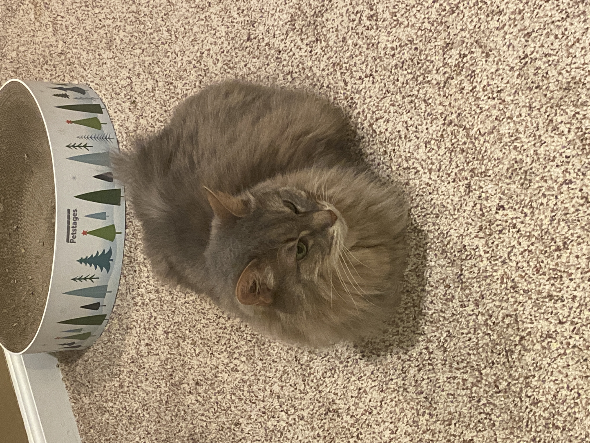
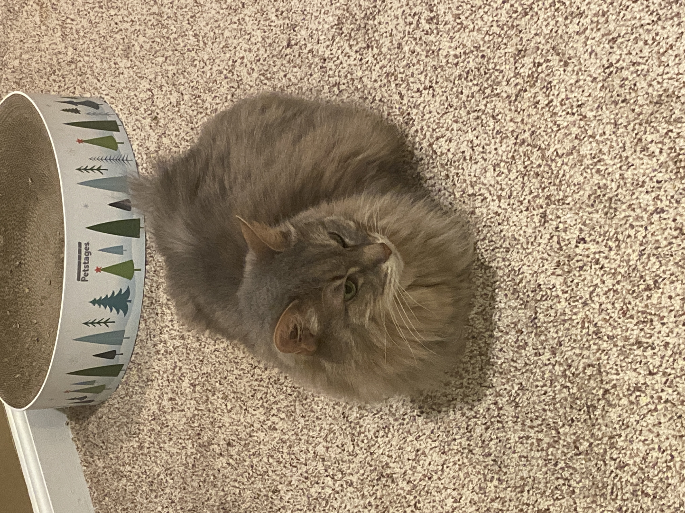

Pets
Bacon Q Dog

Bacon Q. Dog is a 9yr old labradoodle. He prefers to spend his days lounging among the three different beds/couches that his family has gifted him. He enjoys a walk or two around the neighborhood, as long as he can pretend that he doesn't see any of the other animals to avoid the embarrassment of not wanting to admit he has no wolf-like skills in chasing them. At night just as the rest of the family is ready to relax, Bacon suddenly wants to release all of his energy. He will place his toys on a mini couch and frantically drag the couch around, giving his toys "a ride." There is also a lot of rolling. Lots and lots of rolling.
Photo Gallery


Likes
- Belly rubs
- Playing tug-of-war
- Sneaking onto the couch
- Long walks
- Lots of attention
Loki
Loki is an 8 year old Akita mix. He was a rescue dog we got 6/7 years ago. He likes pets and food but loves treats and walks. He follows my mom everywhere around the house and waits for her while she's gone, so much so that we think its separation anxiety :(.
Photo Gallery
Likes
- Walks
- Food of any kind
- Barking out the window
- Watching my mom cook
- Sleeping on the bed
Mango
Mango was a stray cat my brother found in a dumpster at MSU. He decided to keep her and has been taking care of her since. She is very friendly to humans and loves playing with toys. However, she does not get along with Loki yet. Hopefully they can build a friendship and learn to enjoy eachother's company
Photo Gallery
Likes
- Chin scratches
- Play hunting
- Perching up in high places
- Hiding in obvious spots
- Meowing at night
Yoshi
Yoshi is a Shiba Inu. Like most of them, he is energetic and sassy but in an adorable way. He's a bit large for a Shiba and that just gives more of him to love. He loves running up and down the carpeted stairs. Depending on his mood, he will beg for food or for pets.
Photo Gallery
Likes
- Walks
- Car rides
- Chasing cats
- Running up and down the stairs
Maxi and Foxi
Maxi and Foxi are siblings that were adopted together. They're on the older side, around 15 years old, but are healthy and happy. Maxi is the short hair cat with a cute face and Foxi is the long hair cat with the pretty eyes. Maxi is more friendly and curious whereas Foxi is shy and skittish.
Photo Gallery
.JPG) 

Likes
- Pets of any kind
- Cudding and napping
- Grooming each other